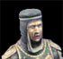
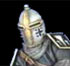
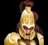
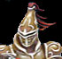
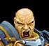
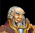

Lors de la réactivation de la seigneurie pour le début de la nouvelle ère, 1 point par rang de noblesse est attribué à la seigneurie. Ces points sont échangeables contre des avantages de départ. Selon le nombre de points que vous avez, vous pouvez choisir parmi un ou plusieurs des choix suivants. Il est possible d'investir plus d'un point par catégorie et dans ce cas les avantages sont multipliés.
Donne 3 voleurs le point Il est important de noter que si une seigneurie ayant un rang de noblesse supprime sa seigneurie dans le but d'en recommencer une autre, elle perdera automatiquement son rang.
Le rang de base est vagabond, il ne donne aucun point de noblesse et par la suite les rangs sont les suivants:
Vagabond 0 point Paysan 1 point Vassal 2 points 
Chevalier 3 points 
Grand chevalier 4 points Capitaine 5 points 
Commandant 6 points 
Champion 7 points 
Général 8 points Héro 9 points 
Baron 10 points Comte 11 points ???? 12 points